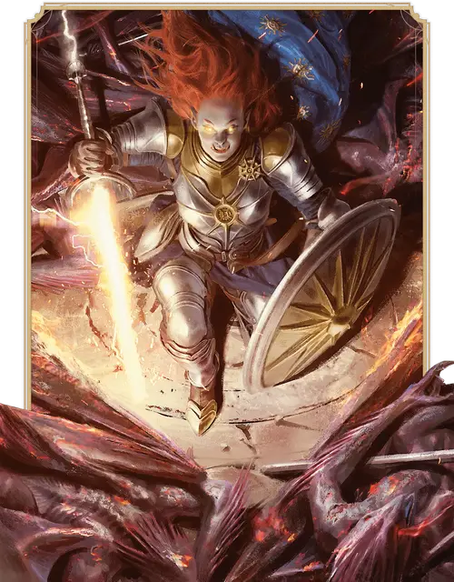

Паладин
Paladin

Основная характеристика Сила и Харизма
Кость хитов К10 за уровень Паладина
Хиты за уровень 1к10 (или 6) + ваш модификатор Телосложения (суммарно минимум 1)
Владение спасбросками Мудрость и Харизма
Владение навыками Выберите два: Атлетика, Запугивание, Медицина, Проницательность, Религия или Убеждение
Владение оружием Простое оружие; Воинское оружие
Тренированность с доспехами Лёгкие, Средние и Тяжёлые доспехи; Щиты
Начальное снаряжение Выберите А или Б:
(А) Кольчуга, Щит, Длинный меч, 6 Метательных копий, Священный символ, Набор священника и 9 ЗМ;
или (Б) 150 ЗМ
| Уровень | Бонус владения | Классовые умения | Проведение божественности | Подготовленные заклинания | Ячейки заклинаний на уровень заклинаний: 1 | Ячейки заклинаний на уровень заклинаний: 2 | Ячейки заклинаний на уровень заклинаний: 3 | Ячейки заклинаний на уровень заклинаний: 4 | Ячейки заклинаний на уровень заклинаний: 5 |
|---|---|---|---|---|---|---|---|---|---|
| 1 | +2 | Возложение рук, Оружейное мастерство, Сотворение заклинаний | - | 2 | 2 | - | - | - | - |
| 2 | +2 | Боевой стиль, Кара Паладина | - | 3 | 2 | - | - | - | - |
| 3 | +2 | Подкласс Паладина, Проведение божественности | 2 | 4 | 3 | - | - | - | - |
| 4 | +2 | Увеличение характеристик | 2 | 5 | 3 | - | - | - | - |
| 5 | +3 | Дополнительная атака, Верный скакун | 2 | 6 | 4 | 2 | - | - | - |
| 6 | +3 | Аура защиты | 2 | 6 | 4 | 2 | - | - | - |
| 7 | +3 | Умение подкласса | 2 | 7 | 4 | 3 | - | - | - |
| 8 | +3 | Увеличение характеристик | 2 | 7 | 4 | 3 | - | - | - |
| 9 | +4 | Порицание врагов | 2 | 9 | 4 | 3 | 2 | - | - |
| 10 | +4 | Аура отваги | 2 | 9 | 4 | 3 | 2 | - | - |
| 11 | +4 | Сияющие удары | 3 | 10 | 4 | 3 | 3 | - | - |
| 12 | +4 | Увеличение характеристик | 3 | 10 | 4 | 3 | 3 | - | - |
| 13 | +5 | — | 3 | 11 | 4 | 3 | 3 | 1 | - |
| 14 | +5 | Восстанавливающее касание | 3 | 11 | 4 | 3 | 3 | 1 | - |
| 15 | +5 | Умение подкласса | 3 | 12 | 4 | 3 | 3 | 2 | - |
| 16 | +5 | Увеличение характеристик | 3 | 12 | 4 | 3 | 3 | 2 | - |
| 17 | +6 | — | 3 | 14 | 4 | 3 | 3 | 3 | 1 |
| 18 | +6 | Расширение ауры | 3 | 14 | 4 | 3 | 3 | 3 | 1 |
| 19 | +6 | Эпический дар | 3 | 15 | 4 | 3 | 3 | 3 | 2 |
| 20 | +6 | Умение подкласса | 3 | 15 | 4 | 3 | 3 | 3 | 2 |
как персонаж 1-го уровня
Получите все атрибуты из таблицы «Ключевые атрибуты Паладина».
Получите умения Паладина 1-го уровня; они перечислены в таблице «Умения Паладина».
как мультиклассовый персонаж
Получите следующие атрибуты из таблицы «Ключевые атрибуты Паладина»: Кость хитов, владение Воинским оружием и тренированность с Лёгкими и Средними доспехами и Щитами.
Получите умения Паладина 1-го уровня; они перечислены в таблице «Умения Паладина». Ознакомьтесь с правилами мультиклассирования, чтобы определить доступные вам ячейки заклинаний.
Уровень 1: Возложение рук
Ваше благословенное касание может лечить раны. У вас есть резерв целительной силы, восстанавливающийся, когда вы завершаете Долгий отдых. С помощью этого резерва вы можете восстанавливать Хиты; количество Хитов в этом резерве равно вашему уровню Паладина, умноженному на 5.
Бонусным действием вы можете прикоснуться к существу (включая себя) и зачерпнуть силу из резерва, восстанавливая этому существу Хиты. Их количество не должно превышать число, оставшееся в резерве.
Вы также можете потратить 5 Хитов из резерва, чтобы снять с существа состояние Отравленный; эти потраченные Хиты не исцеляют существо.
Уровень 1: Оружейное мастерство
Ваши тренировки с оружием позволяют вам использовать свойства мастерства двух видов оружия, которыми вы владеете, по вашему выбору — например, Длинного меча и Метательного копья.
Каждый раз, когда вы завершаете Долгий отдых, вы можете изменить выбранные вами виды оружия. Например, вы могли бы переключиться на использование свойств мастерства Алебарды и Цепа.
Уровень 1: Сотворение заклинаний
Вы научились сотворять заклинания через молитвы и медитации. Правила сотворения заклинаний смотрите в соответствующей статье. Следующая информация описывает, как вы используете эти правила с заклинаниями Паладина.
Ячейки заклинаний. В таблице «Умения Паладина» указано, сколько у вас есть ячеек заклинаний для сотворения заклинаний 1-го уровня и выше. Вы восстанавливаете все потраченные ячейки, когда завершаете Долгий отдых.
Подготовленные заклинания 1-го уровня и выше. Вы подготавливаете список заклинаний 1-го уровня и выше, которые вы можете сотворять с помощью этого умения. Для начала выберите два заклинания 1-го уровня из списка заклинаний Паладина. Каждое выбираемое заклинание может быть только такого уровня, для которого у вас есть ячейка заклинаний.
Количество заклинаний в вашем списке увеличивается по мере получения уровней Паладина, как указано в столбце «Подготовленные заклинания» таблицы «Умения Паладина». Когда это число увеличивается, выбирайте дополнительные заклинания Паладина до тех пор, пока их количество не сравняется с числом, указанным в таблице. Каждое выбираемое заклинание может быть только такого уровня, для которого у вас есть ячейка заклинаний. Например, если вы Паладин 5-го уровня, ваш список подготовленных заклинаний может включать шесть заклинаний 1-го или 2-го уровня из вашей книги заклинаний в любой комбинации.
Если другое умение Паладина даёт вам заклинания, которые у вас всегда подготовлены, то эти заклинания не учитываются в общем списке подготавливаемых вами с помощью этого умения заклинаний; в остальных отношениях для вас они считаются заклинаниями Паладина.
Замена подготовленных заклинаний. Каждый раз, когда вы завершаете Долгий отдых, вы можете заменить одно заклинание из своего списка другим заклинанием Паладина, для которого у вас есть ячейка заклинаний.
Заклинательная характеристика. Заклинательной характеристикой для ваших заклинаний Паладина является Харизма.
Заклинательная фокусировка. Вы можете использовать Священный символ в качестве Заклинательной фокусировки для ваших заклинаний Паладина.
Уровень 2: Боевой стиль
Вы получаете черту из категории Боевых стилей на ваш выбор. Вместо черты вы можете выбрать следующую особенность.
Благословенный воин. Вы изучаете два заговора Жреца на ваш выбор. Рекомендуются Наставление и Священное пламя. Эти заговоры считаются для вас заклинаниями Паладина; вашей заклинательной характеристикой для них является Харизма. Каждый раз, когда вы получаете уровень Паладина, вы можете заменить один из этих заговоров другим заговором Жреца.
Уровень 2: Кара Паладина
У вас всегда подготовлено заклинание Божественная кара. Кроме того, вы можете сотворить его без ячейки заклинаний, и вы должны завершить Долгий отдых, прежде чем сможете сделать это снова.
Уровень 3: Подкласс Паладина
Вы получаете подкласс Паладина на ваш выбор. Подкласс — это специализация, которая даёт вам умения на определённых уровнях Паладина. Вы всегда получаете все умения подкласса, уровень которых не больше вашего уровня Паладина.
Нарушение клятвы
Паладин стремится соблюдать высочайшие стандарты поведения, но пасть могут даже самые преданные своим принципам: иногда Паладин нарушает данную им клятву.
Нарушивший клятву Паладин обыкновенно ищет искупления, проводя в знак покаяния всенощное бдение или соблюдая пост. После обряда отпущения Паладин начинает с чистого листа.
Если ваш Паладин не раскаивается в нарушении клятвы, обсудите это с вашим Мастером. Вероятно, вашему Паладину стоит выбрать другой подкласс, а может быть, даже другой класс, отказавшись от этого.
Уровень 3: Проведение божественности
Вы можете направлять божественную энергию непосредственно с Внешних планов, сотворяя магические эффекты. Вы начинаете с одним таким эффектом: Божественное чувство; этот эффект описан ниже. Другие умения Паладина могут дать вам иные варианты эффектов Проведения божественности. Каждый раз, когда вы используете Проведение божественности этого класса, выберите, какой эффект Проведения божественности этого класса вы создаёте.
Вы можете использовать Проведение божественности этого класса дважды. Вы восстанавливаете одно потраченное использование Проведения по завершению Короткого отдыха, и вы восстанавливаете все потраченные использования по завершению Долгого отдыха. Вы получаете ещё одно дополнительное использование, когда достигаете 11-го уровня Паладина.
Если эффект Проведения божественности требует спасброска, его Сл равняется Сл спасброска заклинаний от умения Сотворение заклинаний этого класса.
Божественное чувство. Бонусным действием вы можете открыть свое сознание к обнаружению Исчадий, Небожителей и Нежити. В течение следующих 10 минут или пока вы не получите состояние Недееспособный, вы знаете местоположение всех существ перечисленных типов в пределах 60 футов от вас, и вы знаете, какого типа каждое такое существо. В тех же пределах вы также обнаруживаете присутствие любого места или объекта, которые были освящены или осквернены, как, например, заклинанием Святилище.
Уровень 4: Увеличение характеристик
Вы получаете черту Увеличение характеристик или другую черту на ваш выбор, требованиям которой вы соответствуете.
Уровень 5: Дополнительная атака
Когда в ваш ход вы используете действие Атака, вы можете совершить не одну, а две атаки.
Уровень 5: Верный скакун
Вы можете призвать на подмогу потустороннего скакуна. У вас всегда подготовлено заклинание Обретение скакуна.
Вы также можете единожды сотворить его без траты ячейки заклинаний, и вы восстанавливаете возможность сделать это по завершении Долгого отдыха.
Уровень 6: Аура защиты
Вы излучаете невидимую защитную ауру, исходящую от вас 10-футовой Эманацией. Аура неактивна, пока у вас есть состояние Недееспособный.
Вы и ваши союзники в области действия ауры получаете бонус к спасброскам, равный вашему модификатору Харизмы (минимальный бонус +1).
Каждое существо может получать бонус только от одной Ауры защиты одновременно; если на него действует несколько таких аур, существо выбирает, какая из них оказывает на него эффект.
Уровень 7: Умение подкласса
Вы получаете все умения подкласса Паладина 7-го уровня.
Уровень 8: Увеличение характеристик
Вы получаете черту Увеличение характеристик или другую черту на ваш выбор, требованиям которой вы соответствуете.
Уровень 9: Порицание врагов
Действием Магия вы можете потратить одно использование Проведения божественности этого класса, чтобы повергнуть врагов в благоговейный трепет. Продемонстрировав ваш Священный символ или оружие, вы можете нацелиться на видимых вами в пределах 60 футов от вас существ количеством не больше вашего модификатора Харизмы (минимум одно существо). Каждая цель должна преуспеть в спасброске Мудрости, иначе получит состояние Испуганный на 1 минуту или пока не получит урон. Испуганное таким образом существо в свои ходы может или только переместиться, или только совершить действие, или только совершить Бонусное действие.
Уровень 10: Аура отваги
Вы и ваши союзники в вашей Ауре Защиты обладаете Иммунитетом к состоянию Испуганный. Если союзник с состоянием Испуганный входит в ауру, то это состояние не имеет на него эффекта, пока он там находится.
Уровень 11: Сияющие удары
Ваши удары теперь обладают сверхъестественной силой. Когда вы попадаете по цели броском атаки Рукопашным оружием или Безоружным ударом, цель получает 1к8 дополнительного урона Излучением.
Уровень 12: Увеличение характеристик
Вы получаете черту Увеличение характеристик или другую черту на ваш выбор, требованиям которой вы соответствуете.
Уровень 14: Восстанавливающее касание
Когда вы применяете на существо Возложение рук, можете также снять с него одно или несколько из следующих состояний: Испуганный, Оглохший, Ослеплённый, Очарованный, Ошеломлённый или Парализованный. Вы должны потратить по 5 Хитов из резерва Возложения рук за каждое снимаемое вами состояние; эти потраченные Хиты не исцеляют существо.
Уровень 15: Умение подкласса
Вы получаете все умения подкласса Паладина 15-го уровня.
Уровень 16: Увеличение характеристик
Вы получаете черту Увеличение характеристик или другую черту на ваш выбор, требованиям которой вы соответствуете.
Уровень 18: Расширение ауры
Ваша Аура защиты теперь — Эманация радиусом 30 футов.
Уровень 19: Эпический дар
Вы получаете черту из категории Эпических даров или другую черту по вашему выбору, требованиям которой вы соответствуете. Рекомендуется Дар истинного зрения.
Уровень 20: Умение подкласса
Вы получаете все умения подкласса Паладина 20-го уровня.
Подклассы
Клятва преданности
Защищайте идеалы порядка и справедливости
Клятва преданности связывает Паладинов с идеалами порядка и справедливости. Эти Паладины соответствуют архетипу рыцаря в сияющих доспехах. Они придерживаются самых высоких стандартов поведения, и некоторые — к лучшему это или к худшему — приводят к этим стандартам весь мир.
Многие из принимающих эту клятву преданы богам добра и закона; Догматы своих богов они используют как мерило личной преданности. Другие считают своим идеалом ангелов; они изображают ангельские крылья на шлемах и гербах.
Эти паладины разделяют следующие догматы:
• Пусть слово твоё будет незыблемо.
• Защищай слабых и не бойся действовать.
• Пусть благородные дела твои служат примером.
Уровень 3: Заклинания Клятвы преданности
Магия вашей клятвы гарантирует, что у вас всегда будут подготовлены определённые заклинания; с момента достижения вами уровня Паладина, указанного в следующей таблице, у вас всегда будут подготовлены соответствующие этому уровню заклинания.
| Уровень Паладина | Заклинания |
| 3 | Защита от зла и добра, Щит веры |
| 5 | Область истины, Подмога |
| 9 | Маяк надежды, Рассеивание магии |
| 13 | Свобода перемещения, Страж веры |
| 17 | Небесный огонь, Общение |
Уровень 3: Священное оружие
Когда вы совершаете действие Атака, можете потратить одно использование вашего Проведения божественности, чтобы наполнить положительной энергией одно Рукопашное оружие, которое вы держите. В течение 10 минут или пока вы снова не используете это умение, вы добавляете ваш модификатор Харизмы к броскам атаки, совершаемым вами с этим оружием (минимальный бонус +1); при каждом попадании этим оружием вы можете изменить тип наносимого урона на урон Излучением.
Оружие также испускает Яркий свет на 20 футов и Тусклый свет ещё на 20 футов.
Вы можете прекратить этот эффект досрочно (действий не требуется). Этот эффект также заканчивается, если вы не держите или не несёте это оружие.
Уровень 7: Аура преданности
Вы и ваши союзники в вашей Ауре защиты обладаете Иммунитетом к состоянию Очарованный. Если союзник с состоянием Очарованный входит в ауру, то это состояние не оказывает на него эффекта, пока он там находится.
Уровень 15: Кара защитника
Ваши магические удары теперь излучают защитную энергию. Каждый раз, когда вы сотворяете Божественную кару, вы и ваши союзники в вашей Ауре защиты получаете Укрытие наполовину. Аура дарует этот эффект до начала вашего следующего хода.
Уровень 20: Святой нимб
Бонусным действием вы можете усилить свою Ауру защиты святой силой, дарующей описанные ниже преимущества на 10 минут или пока вы не окончите их (действий не требуется). Как только вы использовали это умение, не можете сделать это вновь, пока не завершите Долгий отдых. Вы также можете восстановить его использование, потратив ячейку заклинаний 5-го уровня (действий не требуется).
Священный оберег. Вы совершаете с Преимуществом спасброски, которые вас заставляют делать Исчадия и Нежить.
Священный урон. Каждый раз, когда враг начинает свой ход в ауре, это существо получает урон Излучением, равный вашему модификатору Харизмы + ваш Бонус владения.
Солнечный свет. Аура наполнена Ярким светом; этот свет — солнечный свет.
Клятва славы
Стремитесь к вершинам героизма
Паладины, принимающие Клятву славы, верят, что им и их товарищам суждено достичь славы, совершая подвиги героизма. Они усердно готовятся и воодушевляют своих товарищей, чтобы быть готовыми к моменту, когда судьба призовет их.
Эти паладины разделяют следующие догматы:
• Стремись быть известным своими славными делами.
• Смело встречай трудности.
• Вдохновляй других стремиться к славе.
Уровень 3: Заклинания Клятвы славы
Магия вашей клятвы гарантирует, что у вас всегда будут подготовлены определённые заклинания; с момента достижения вами уровня Паладина, указанного в следующей таблице, у вас всегда будут подготовлены соответствующие этому уровню заклинания.
| Уровень Паладина | Заклинания |
| 3 | Героизм, Направляющий снаряд |
| 5 | Магическое оружие, Улучшение характеристики |
| 9 | Защита от энергии, Ускорение |
| 13 | Принуждение, Свобода перемещения |
| 17 | Знание легенд, Царственное величие Йоланды |
Уровень 3: Воодушевляющий удар
Немедленно после сотворения Божественной кары вы можете потратить одно использование вашего Проведения божественности и распределить Временные хиты существам в пределах 30 футов от вас на ваш выбор (можно выбрать себя). Общее количество Временных хитов равно 2к8 + ваш уровень Паладина; вы распределяете Временные хиты на своё усмотрение.
Уровень 3: Несравненный атлет
Бонусным действием вы можете потратить одно использование вашего Проведения божественности, чтобы усилить свой атлетизм. В течение 1 часа вы совершаете с Преимуществом проверки Силы (Атлетика) и Ловкости (Акробатика), а дальность ваших Прыжков в длину и в высоту увеличивается на 10 футов (это дополнительное расстояние требует траты перемещения, как обычно).
Уровень 7: Аура рвения
Ваша Скорость увеличивается на 10 футов.
Кроме того, каждый раз, когда ваш союзник начинает ход в вашей Ауре защиты или впервые за ход входит в неё, его Скорость увеличивается на 10 футов до конца его следующего хода.
Уровень 15: Блестящая оборона
Вы можете обернуть защиту в неожиданную атаку. Когда по вам или другому существу, видимому вами в пределах 10 футов от вас, попадают броском атаки, вы можете Реакцией дать цели атаки бонус к КЗ против этой атаки, что может изменить результат на промах. Бонус равен вашему модификатору Харизмы (минимум +1). Если эта атака промахивается, вы можете частью этой Реакции совершить по атакующему одну атаку оружием, если он находится в досягаемости вашего оружия.
Вы можете использовать эту способность число раз, равное вашему модификатору Харизмы (минимум один раз), восстанавливая использованное, когда вы завершаете Долгий отдых.
Уровень 20: Живая легенда
Вы можете усилить себя легендами о своих великих деяниях, правдивыми или преувеличенными.
Бонусным действием вы на 10 минут получаете описанные ниже преимущества. Как только вы использовали это умение, не можете сделать это вновь, пока не завершите Долгий отдых. Вы также можете восстановить его использование, потратив ячейку заклинаний 5-го уровня (действий не требуется).
Харизматичный. Вы наделены благословением потустороннего присутствия и совершаете с Преимуществом все проверки Харизмы.
Переброс спасброска. Если вы провалили спасбросок, можете Реакцией перебросить его. Вы должны использовать новый результат.
Неотвратимый удар. Один раз в каждый ваш ход, когда вы промахиваетесь броском атаки с оружием, можете вместо этого попасть.
Клятва возмездия
Карайте злодеев — любой ценой
Клятва возмездия — это торжественное обязательство карать совершающих тяжкие злодеяния. Когда армии зла убивают беспомощных сельчан, когда тиран бросает вызов воле богов, когда гильдия воров становится слишком жестокой, когда дракон бушует в деревне — в такие моменты паладины встают и приносят Клятву возмездия, клятву исправить несправедливость.
Эти паладины разделяют следующие догматы:
• Не щади зла.
• Борись с несправедливостью и её причинами.
• Помогай тем, кто пострадал от несправедливости.
Уровень 3: Заклинания Клятвы возмездия
Магия вашей клятвы гарантирует, что у вас всегда будут подготовлены определённые заклинания; с момента достижения вами уровня Паладина, указанного в следующей таблице, у вас всегда будут подготовлены соответствующие этому уровню заклинания.
| Уровень Паладина | Заклинания |
| 3 | Метка охотника, Порча |
| 5 | Туманный шаг, Удержание личности |
| 9 | Защита от энергии, Ускорение |
| 13 | Изгнание, Переносящая дверь |
| 17 | Наблюдение, Удержание монстра |
Уровень 3: Обет вражды
Когда вы совершаете действие Атака, можете потратить одно использование вашего Проведения божественности, чтобы дать Обет вражды видимому вами в пределах 30 футов от вас существу. Вы совершаете с Преимуществом броски атаки по этому существу в течение 1 минуты или пока снова не используете это умение.
Если Хиты этого существа опускаются до 0 до окончания обета, вы можете перенести обет на другое существо в пределах 30 футов от вас (действий не требуется).
Уровень 7: Неумолимый мститель
Ваша сверхъестественная сосредоточенность помогает вам предотвратить бегство врага. Когда вы попадаете по существу Провоцированной атакой, вы можете уменьшить его Скорость до 0 до конца текущего хода. Затем частью этой же Реакции вы можете переместиться на расстояние вплоть до половины вашей Скорости; это перемещение не вызывает Провоцированных атак.
Уровень 15: Душа мести
Немедленно после того, как существо под эффектом вашего Обета вражды попадает или промахивается броском атаки, вы можете Реакцией совершить по нему рукопашную атаку, если оно в пределах вашей досягаемости.
Уровень 20: Ангел отмщения
Бонусным действием вы получаете описанные ниже преимущества на 10 минут или пока вы не окончите их (действий не требуется). Как только вы использовали это умение, не можете сделать это вновь, пока не завершите Долгий отдых. Вы также можете восстановить его использование, потратив ячейку заклинаний 5-го уровня (действий не требуется).
Полёт. За вашей спиной вырастают призрачные крылья; у вас есть Скорость полёта 60 футов (вы можете парить).
Ужасающая аура. Каждый раз, когда враг начинает свой ход в вашей Ауре защиты, он должен преуспеть в спасброске Мудрости, иначе получит состояние Испуганный на 1 минуту или пока не получит урон. Броски атаки по существу с этим состоянием совершаются с Преимуществом.
Клятва древних
Сохраняйте в мире жизнь и свет
Клятва древних так же стара, как первые эльфы. Паладины, дающие эту клятву, хранят свет; больше, чем честь, мужество и справедливость в этом мире они ценят прекрасное и дающее жизнь. Они часто украшают свои доспехи и одежду изображениями растущих вещей — листьев, рогов, цветов — чтобы отразить свою приверженность cохранению жизни и света.
Эти паладины разделяют следующие догматы:
• Разжигай свет надежды.
• Сохраняй жизнь.
• Наслаждайся искусством и смехом.
Уровень 3: Заклинания Клятвы древних
Магия вашей клятвы гарантирует, что у вас всегда будут подготовлены определённые заклинания; с момента достижения вами уровня Паладина, указанного в следующей таблице, у вас всегда будут подготовлены соответствующие этому уровню заклинания.
| Уровень Паладина | Заклинания |
| 3 | Опутывающий удар, Разговор с животными |
| 5 | Лунный луч, Туманный шаг |
| 9 | Защита от энергии, Рост растений |
| 13 | Град, Каменная кожа |
| 17 | Древесный путь, Общение с природой |
Уровень 3: Гнев природы
Действием Магия вы можете потратить одно использование Проведения божественности этого класса, чтобы призвать призрачные лозы, опутывающие врагов. Выберите видимых вами в пределах 15 футов от вас существ; выбранные существа должны преуспеть в спасброске Силы, иначе получат состояние Опутанный на 1 минуту. Существо с этим состоянием повторяет спасбросок в конце каждого из своих ходов, при успехе оканчивая на себе это состояние.
Уровень 7: Аура опеки
Древняя магия пронизывает вас, образуя мистическую защиту и ослабляя энергию извне Материального плана; вы и ваши союзники в вашей Ауре защиты обладаете Сопротивлением Некротическому и Психическому урону и урону Излучением.
Уровень 15: Бессмертный страж
Когда ваши Хиты снижаются до 0, но вы не убиты мгновенно, вы можете вместо этого опустить Хиты только до 1 и восстановить Хиты в количестве, равном вашему уровню Паладина, умноженному на 3. Вы не можете использовать это умение снова, пока не завершите Долгий отдых.
Кроме того, вы не можете быть магически состарены и перестаёте заметно стареть.
Уровень 20: Древний чемпион
Бонусным действием вы можете усилить свою Ауру защиты первобытной силой, дарующей описанные ниже преимущества на 1 минуту или пока вы не окончите их (действий не требуется). Как только вы использовали это умение, не можете сделать это вновь, пока не завершите Долгий отдых. Вы также можете восстановить его использование, потратив ячейку заклинаний 5-го уровня (действий не требуется).
Насадить повиновение. Враги в вашей ауре совершают с Помехой спасброски против ваших заклинаний и эффектов Проведения божественности.
Регенерация. В начале каждого вашего хода вы восстанавливаете 10 Хитов.
Быстрые заклинания. Каждый раз, когда вы сотворяете заклинание со временем сотворения в действие, можете сотворить его не действием, а Бонусным действием.
Клятва благородных гениев
Вооружитесь стихийным великолепием гениев
Паладины, принесшие клятву благородным гениям, почитают силы Стихийных планов. Приняв эту клятву, Паладин принимает и силы четырёх типов гениев: это дао, повелители земли; джинны, повелители воздуха; ифриты, повелители огня; и мариды, повелители воды. Многие последователи Клятвы благородных гениев на Фаэруне происходят из Калимшана, где гениев особенно много. Принимающие эту клятву Паладины зачастую отправляются на задания, ведущие их по Забытым Королевствам и по всей мультивселенной, включая и Стихийные планы.
Эти паладины разделяют следующие догматы:
• В пепел разрушения посей семя сотворения.
• Веди люд с величием и достоинством.
• Уважай стихии и бойся их гнева.
Уровень 3: Стихийная кара
Немедленно после того, как вы сотворили Божественную кару, можете потратить одно использование Проведения божественности, чтобы вызвать один из следующих эффектов:
Всплеск марида. Цель Божественной кары, а также существа по вашему выбору из находящихся в области 10-футовой Эманации, исходящей от вас, совершают спасбросок Силы (Сл равна вашей Сл спасброска заклинаний). При провале существо отталкивается по прямой линии от вас на 15 футов и получает состояние Опрокинутый.
Давление дао. Земля вздымается вокруг цели Божественной кары: та получает состояние Схваченный (Сл освобождения от захвата равна вашей Сл спасброска заклинаний). Пока у цели есть это состояние, она также имеет и состояние Опутанный.
Побег джинна. Вы телепортируетесь в видимое вами в пределах 30 футов от вас незанятое пространство и принимаете отчасти бестелесную форму до конца вашего следующего хода. В этой форме вы обладаете Сопротивлением Дробящему, Колющему и Рубящему урону и Иммунитетом к состояниям Опрокинутый, Опутанный и Схваченный.
Ярость ифрита. Цель Божественной кары получает 2к4 дополнительного урона Огнём, и это пламя перескакивает с этой цели на другое существо, видимое вами в пределах 30 футов от вас: это другое существо также получает 2к4 урона Огнём.
Уровень 3: Заклинания гениев
Магия вашей клятвы гарантирует, что у вас всегда будут подготовлены определённые заклинания; с момента достижения вами уровня Паладина, указанного в следующей таблице, у вас всегда будут подготовлены соответствующие этому уровню заклинания
| Уровень Паладина | Заклинания |
| 3 | Громовая кара, Хроматический шар, Элементализм |
| 5 | Воображаемая сила, Отражения |
| 9 | Газообразная форма, Полёт |
| 13 | Вызов элементаля, Призыв малых элементалей |
| 17 | Изгоняющая кара, Связь с иным планом |
Уровень 3: Великолепие гения
Пока вы не носите доспехов, ваш базовый Класс Защиты равен 10 + ваши модификаторы Ловкости и Харизмы. Это умение работает даже если вы надеваете Щит. Кроме того, вы получаете владение одним навыком на ваш выбор из следующего списка: Акробатика, Выступление, Запугивание, Убеждение.
Уровень 7: Аура стихийной защиты
Выберите один тип урона: Звук, Кислота, Огонь, Холод, Электричество. Вы и ваши союзники обладаете Сопротивлением этому типу урона, пока находитесь в области воздействия вашей Ауры защиты. В начале каждого вашего хода вы можете изменить тип урона для этого умения на другой из того же списка (действий не требуется).
Уровень 15: Стихийное возмездие
Когда по вам попадает бросок атаки, вы можете Реакцией уменьшить получаемый вами урон вдвое (округляя вниз) и заставить атакующего совершить спасбросок Ловкости (Сл равна вашей Сл спасброска заклинаний). При провале атакующий получает урон, равный 2к10 + ваш модификатор Харизмы, одного из следующих типов на ваш выбор: Звук, Кислота, Огонь, Холод, Электричество. При успехе атакующий получает только половину этого урона. Вы можете использовать это умение количество раз, равное вашему модификатору Харизмы (минимум 1 раз), и вы восстанавливаете все потраченные использования, когда завершаете Долгий отдых.
Уровень 20: Благородный гений
Бонусным действием вы получаете нижеперечисленные преимущества на 10 минут или пока не окончите их (действий не требуется). Как только вы используете это умение, вы не можете сделать это снова, пока не завершите Долгий отдых. Вы можете также восстановить использование этого умения, потратив ячейку заклинаний 5-го уровня (действий не требуется).
Полёт. Вы обладаете Скоростью полёта 60 футов и можете парить.
Малое желание. Когда вы или ваш союзник в области вашей Ауры защиты проваливаетеТест к20, вы можете Реакцией изменить этот провал на успех.
Описание
Паладины едины в своих клятвах противостоять силам уничтожения и порчи. Принесена ли клятва перед алтарём бога, на священной поляне перед духами природы или в момент отчаяния и горя, когда все свидетели мертвы, клятва Паладина - это мощное обязательство. Это источник силы, который превращает благочестивого воина в благословлённого защитника.
Паладины обучаются боевым навыкам, осваивая разнообразное оружие и доспехи. Однако их навыки боя вторичны к магической силе, которой они обладают: силе исцелять раненых, карать врагов и защищать беспомощных и тех, кто сражается на их стороне.
Неудивительно, таким образом, что жизнь Паладина — жизнь, полная приключений, ибо каждый Паладин живёт на передовой космической борьбы с уничтожением. В рядах армий достаточно редки Воины, но ещё меньше людей могут претендовать на звание Паладина. Получив призыв, эти благословленные оставляют свои прежние занятия и берутся за оружие и магию.